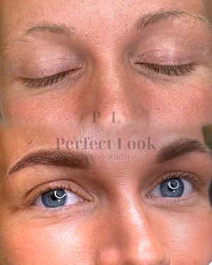
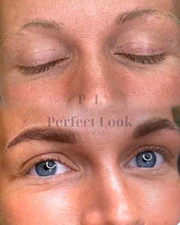

Perfect Look beauty studio nabízí svým klientům profesionální péči a individuální přístup. Před ošetřením probíhá konzultace zdarma, kde zjistíme vaše požadavky a potřeby na míru pro vaši maximální spokojenost.
Ve studiu je možné zakoupení dárkových poukazů a přírodní luxusní britské kosmetiky Jane Scrivner
Petra Ludková – Permanentní make-up & kosmetická péče
Jmenuji se Petra a mým cílem je pomáhat klientkám a klientům cítit se krásně a sebevědomě.
Vystudovala jsem ekonomickou školu a od té doby působila v tomto oboru. Postupně jsem začala pociťovat, že potřebuji změnu a nové naplnění. Protože mi byl svět krásy vždy blízký, rozhodla jsem se vydat cestou permanentního make-upu a kosmetiky.
Dnes vnímám tuto práci jako možnost propojit estetiku, preciznost a osobní přístup. Baví mě sledovat, jak i drobná úprava dokáže rozzářit tvář a dodat sebevědomí.
Věřím, že krása nemá věk – začíná uvnitř nás a rozkvétá pokaždé, když si dopřejeme chvíli jen pro sebe.


Značka Jane Scrivner „doopravdy“ vznikla v roce 2011, už dlouho předtím si ale Jane sama míchala přípravky podle vlastní receptury a poskytovala luxusní kosmetická ošetření obličeje i celého těla, která přinášela skvělé výsledky. Přírodní a účinné bio oleje plné látek, které vyživují pleť, aby nevypadala bledě a nezdravě, ale byla vyživená a plná života.
Jane Scrivner je exkluzivní britská značka, která si získala oblibu po celém světě a byla oceněna řadou prestižních cen. Její filozofie stojí na pečlivém výběru surovin a výrobě s důrazem na nejvyšší kvalitu.
Produkty Jane Scrivner posilují ochrannou bariéru pleti, udržují správné pH a dodávají potřebnou hydrataci i výživu. Nabízí kompletní péči – od odlíčení a čištění pleti až po hydratační a vyživující přípravky.
Součástí sortimentu jsou také originální bytové vůně a éterické oleje, které provoní váš domov a vytvoří jedinečnou atmosféru.
| Permanentní make-up | Cena | |||||
|---|---|---|---|---|---|---|
Obočí
|
||||||
Rty
|
||||||
Oční linky
|
||||||
| Korekce do 3 měsíců 1 500 Kč | ||||||
| Odstranění perm. make-upu od 1 000 Kč | ||||||
| Kosmetika | Cena | |||||
Kosmetické ošetření dle typu pleti
|
||||||
Kosmetické ošetření pro muže včetně relaxační masáže obličeje
|
||||||
| Úprava a barvení obočí (pouze k celkovému ošetření) 250 Kč | ||||||
| Epilace - obličej, ruce, hrudník (pouze k celkovému ošetření) od 250 Kč | ||||||


 
